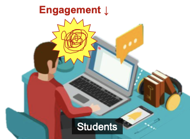

[Completed] 능동적 원격학습을 위한 비디오 인텔리전스 기술 개발
공동연구자 / 2020.11.01 ~ 2021.10.31 / 서울과학기술대학교 (KRW 10 million)
능동적 원격학습을 위한 비디오 인텔리전스 기술 개발 (Developing Digital Biomarker for Early Diagnosis of Dementia in VR)기간: 2020.11. ~ 2021.10.
Funding: SeoulTech (KRW 10 million)
고등교육(예: 대학)에서 플립형 및 혼합형 학습의 인기와 COVID-19 상황으로 인해 현재 많은 학생들이 원격교육을 통해 수업을 진행하고 있습니다. 이러한 원격교육에서 성공적 학습이 이루어지기 위해서는 학생들의 능동적 학습과 교수자의 맞춤형 교육이 중요합니다. 그러나, 학생들과 직접적으로 상호작용하며 학생 몰입 수준을 파악할 수 있는 대면학습과 달리, 비실시간 온라인 환경에서는 학생들의 몰입을 파악하기 어렵습니다. 본 프로젝트는 1) 다차원 클릭스트림 데이터를 통해 학습들의 몰입 수준을 파악할 수 있는 비디오 인텔리전스 기술을 개발하고, 2) 이러한 신기술이 인간-인공지능 상호작용에 미치는 영향을 탐구합니다.
English Summary:
Due to the popularity of flipped and blended learning in higher education (e.g. university) and the COVID-19 situation, many students are currently learning through distance education. For successful learning in such distance education, students' active learning and instructors' adaptive teaching are important. However, unlike face-to-face learning, where instructors can directly interact with students and understand their engagement level, it is difficult to understand student engagement in asynchronous online courses. This project aims to 1) develop a video intelligence technology that can determine students' engagement level through multidimensional clickstream data, and 2) to explore the impact of these new technologies on human-AI interaction.
